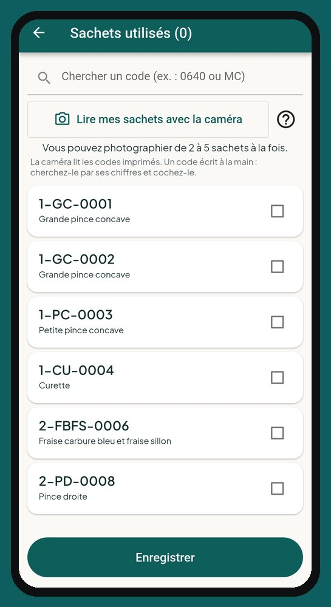

Logiciel de soins podologiques, à domicile et en clinique
Pour les soins des pieds à domicile.
Infirmière auxiliaire en soins podologiques, infirmière en soins des pieds ou autre professionnelle des soins podologiques : CliniQ Pro est née de cette pratique-là.
Les photos, pied gauche, pied droit
Vos photos sont classées par côté et par moment, avant ou après le soin. D'une visite à l'autre, l'évolution se voit d'un coup d'œil.

Vos instruments tracés
Le registre de stérilisation garde vos cycles, vos sachets numérotés et vos tests de spores. Le sachet utilisé est relié à la visite : si un lot est rappelé, vous savez quels patients sont touchés.
Le reçu et les produits
Le reçu en PDF se remet sur place, et une crème vendue s'ajoute à la facture après le soin.
Questions fréquentes
CliniQ Pro est-elle faite pour les soins des pieds ?
Oui. Elle a été créée par une infirmière auxiliaire en soins podologiques, pour sa propre pratique à domicile, puis ouverte à tous les soins de santé à domicile.
Lancement le 1er janvier 2027
Voyez l'application écran par écran, puis réservez votre place : nous vous écrirons dès l'ouverture.
Voir l'applicationRéservez votre place
Une question ? soutien@cliniqpromobile.ca
Les fonctions
- Agenda et itinéraire
- Dossier patient et notes
- Reçus et factures
- Kilométrage automatique
- Dépenses et comptable
- Registre de stérilisation
- Services à domicile, tout-en-un
- Questions et réponses
- Tarifs